⚔
The Game of Fencing
Show Pages ↓
Hide Pages ↑
✦ Why learn the game? ✦
It is entirely possible to have the perfect technique and conditioning for fencing but still be a worse fencer than your opponent because they understand the game better (the opposite can be true too, you can have all the knowledge and no ability to execute it). At a more general level, a lot of the game theory you can learn while fencing can be applied to other games where you are pitted against opponents. The concepts can be applied to chess, poker, fighting games, first-person shooters and any combat sport.
✦ Winning ✦
This cognitive model proposes that decisions begin with making an Observation, "They are close enough to touch". Then comes Orientation, "I am in the correct stance to reach out" or "My hand is too far back to reach them first, I can shift my hand to be in such a position". After this is a Decision, "I like my chances Attack" or "I don't like my chances, retreat". Finally, the Action "Attacks" or "Retreats".
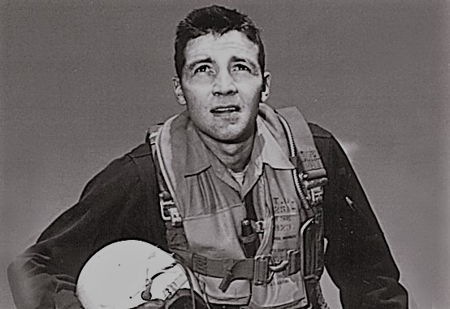This is a model developed for decision making by American military aircraft pilot John Boyd. It is called the OODA Loop. The model is for realtime competition and the basic theory is that between competitors, those who can go through this cognitive loop fastest and more often are more likely to win. Being able to disrupt opponents' OODA Loops can lead to yours being ahead. It has been applied to succeed in battle strategy, business and political campaigns. The ability to lead and have your opponent be a step behind is key to victory in any competition. It makes taking back initiative more work and skews the odds in your favour as they will need to predict to gain an upper-hand.
✦ What is the game? ✦
The objective of the game is to hit the opponent without getting hit yourself. There is pretty much only ever 3 things you can do while fencing or playing a similar game. You can wait to see what your opponent will do and react to whatever they do (counter attack), you can try to build up an advantage over your opponent (preperation, then attack) or you can try to interrupt your opponent’s build-up (attack on preperation). There is a rock paper scissors relationship between these options.
This framework only applies assuming perfect technique and both fencers acting at the same time.
What Happens when Rock meets Rock?
✦ If both fencers try to react to whatever their opponent is doing, nothing happens.
✦ If both fencers prepare then attack, whovever finishes their action first should have the advantage, otherwise, a neutral situation.
✦ If both fencers attempt an attack on preparation, the fencer whose action obscures their target area best should have an advantage.
Want to play some RPS?


 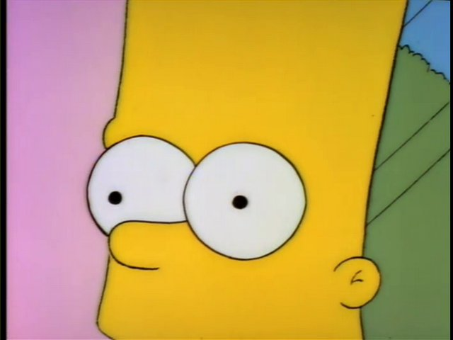
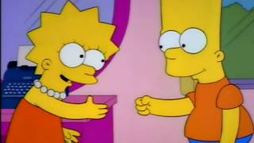
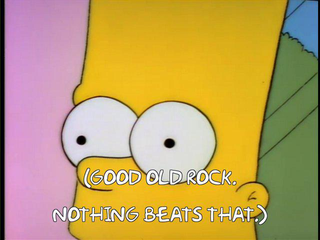
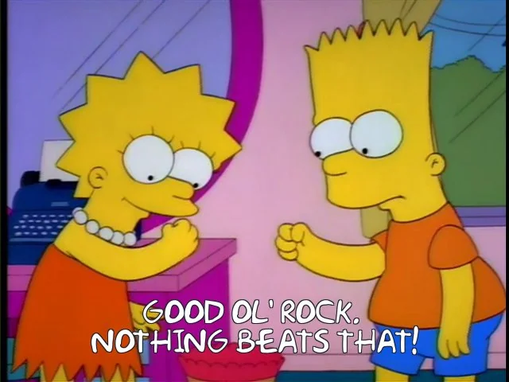
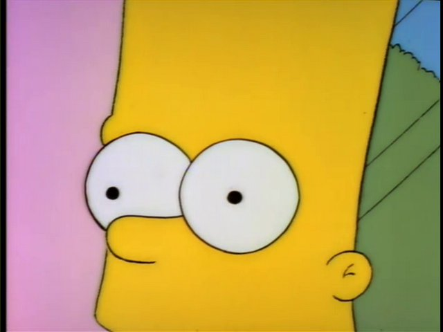
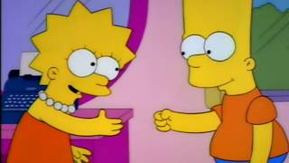
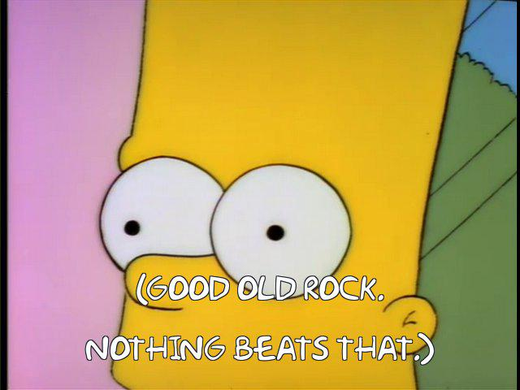
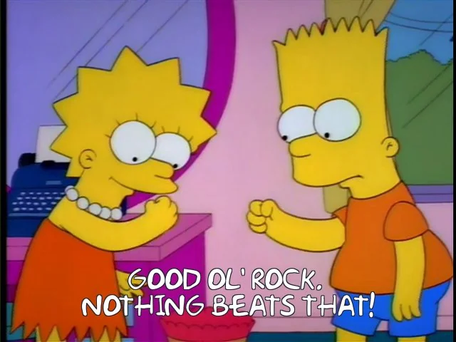
Bear in mind that your opponent is Bart Simpson
For a slightly more elaborate version of this framework with fencing related specifics, see the “tactical wheel”.
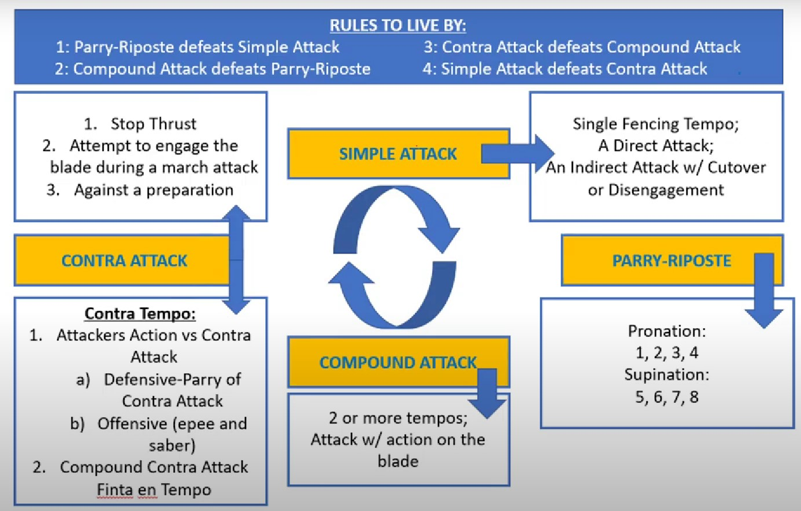✦ Risk and reward ✦
As you might expect, there is a lot more to these games than pure RPS. One can consider their own strengths and weaknesses as well as their opponent’s. If your opponent has a rough time reacting to your actions, you can do straightforward actions more freely without fear of punishment. If your opponent is good at building-up to complete an attack, you should try to make it as difficult as possible for them to be in a situation where they can build an attack on you. This could be by interrupting their attack with actions like a beat to the blade, or a convincing feint (if you’re really confident and have the right distance, just go straight on them). A good example of this is in a bout between Timur Safin and Richard Kruse. Safin is really strong if he is able to build an attack on his opponent. Kruse responds to this by playing a more active defense with threats placed earlier in Safin's build-up. Basically, do stuff the annoys your opponent and stuff that prevents them from annoying you.
Balancing risk and reward is why sometimes epee fencing can be a lot of nothing happening. No one wants to take a risk and the reward for doing nothing can be very high. This has changed with the meta despite the rule changes as the athleticism of epee fencing has increased to a point where doing nothing can be risky when your opponent can explode into an attack which you can't defend.
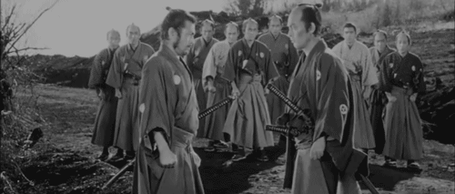✦ How to win? ✦
If you know what your opponent wants to do and your opponent knows what you want to do, how do you hit them and how do they hit you? The answer is mistakes, bluffing, tricks and pattern recognition. Being more skilled than your opponent helps too.
Fencing at an equal playing field
If both fencers have a solid understanding of what the other is trying to do while also having a similar level of skill in terms of footwork, the game might devolve into something like this (a lot of epee looks like this before the fencers have a better idea of their opponent):
Mistakes
"Making mistakes is part of being human. It's good if you can get strong enough to the point where you're okay even after making mistakes." - Keita "Fuudo" Ai (Super Street Fighter IV Evolution Champion 2011)
People naturally make mistakes; good fencers make fewer and less egregious ones (they are also REALLY good at punishing them). This is a result of experience, confidence, good coaching, and active attention being paid to improve one’s fencing. The kinds of mistakes a person makes are dependent on a number of factors. These include experience in competition, confidence, emotional state, how well they have slept, energy levels etc. Safin's attack here could be seen as a mistake as Kruse was well out of range.
Bluffs
"People say that fencing is like physical chess, I say it's more like physical poker. In any given moment, you don't know the odds, you look at a chess board there is no uncertainty. But in poker you don't know the odds. You can make a guess and a good player can figure out the odds better than another player. And a good player has the courage to commit when the odds are in their favour." - Jon Normile (USA Olympian and Veterans 50+ World Champion)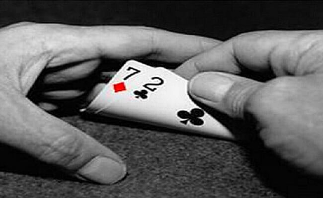
Bluffing works by presenting your opponent with an intention and doing another instead. This could be moving your blade to your opponent's, showing that you want to parry while out of distance. Only to counter attack while your opponent tries to disengage from your action. It could be acting as if you are waiting and doing nothing, only to surprise your opponent with a sudden and explosive attack. Kruse attempts a bluff by showing that he wants to get the right to attack from Safin by trying to beat his blade, only then to attack directly here. It doesn't succeed as Safin stays patient while maintaining the right to attack. By not stepping too far forward, sensing that Kruse wants to surprise him, or maybe he decided to slow down because he wasn’t certain of Kruse's intentions (decreasing the risk he takes). Perhaps Safin was looking for a response from Kruse and was bluffing his build-up to draw a response. If you can get your opponent to follow your lead, bluffs are extremely powerful.
Tricks
"All warfare is based on deception. Hence, when we are able to attack, we must seem unable; when using our forces, we must appear inactive; when we are near, we must make the enemy believe we are far away; when far away, we must make him believe we are near.” - Sun Tzu (The Art of War)
Tricks are kind of like bluffs, only that they involve your opponent not actively following your signal, but rather not noticing something you have done. If they register the trick, then they should be able to call it out in some way. This could be getting closer to your opponent than they realise by increasing the size of your steps but moving at the same speed. Foconi does this here He doesn't get a point but he sets a rhythm and ends with not stepping at all while still following the rhythm. One could extend their arm and move forward while retracting it to make the opponent focus too much on the blade and neglect the distance. GSP describes shifting bodyweight to create an illusion of distance in an MMA context. These tricks (and so many more) all somewhat fall under building up an attack. You need the time and space which allows you to set up these tricks. The distinction is fuzzy and probably changes depending on if the opponent is familiar with the tactics or not.
Pattern Recognition
"Insanity, doing the same thing over and over again but expecting different results." - somtimes Einstein, but it probably wasn't actually him.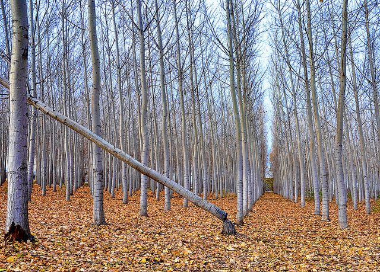
Pattern recognition is noticing things that your opponent does consistently and punishing them for it. You may perhaps notice that a fencer begins the start of every point by bringing their back leg up to their front leg to gain some extra distance. This could be punished with a far range attack as it is far more difficult to parry out while not in a squatted stance. One might notice their opponent consistently parries one way instead of another and punish them for this. One might notice their opponent retract their arm too far after an engagement and punish as their ability to attack and parry are compromised. Some fencers prefer to fence and attack in certain areas of the piste or at certain timings that the fencer understands as being good. These timings are usually related to the steps taken before and the distance between the fencers. If read well, these can be punished. Kruse is extremely prepared for an attack as Safin has gone for attacks at this point on the piste a lot.
✦ Examples of Strategies and Tactics Applied ✦
An experienced fencer when facing a novice in a competition will often try 2 things. The first is to try and exploit some weakness that a novice may be expected to have. This could be that they do a parry incorrectly, overreact or can’t move as well as the experienced fencer. The other, is just wait. They will still move around and act as if they are going to attack, but do not. This creates enormous pressure on the novice who may feel a need to do something and can cause them to have weaker judgement. Maybe attacking out of distance or trying to take the opponent’s blade when they should go straight on to the target. The fear that someone is better than you can be so great that it makes you worse.
One fencer is being extremely defensively minded and is locked into what their opponent is doing, reacting to every blade action and step. The attacking realises this and gives them a host of feints which go to varying depths, jumps, steps, and half-steps. All these actions tire the defensive fencer’s nervous system and allows the attacking fencer to notice what is not being reacted to and attack with a simple feint, disengage from the parry and touch. This tactic is present in any combat scenario where your chances of successfully landing a hit on your opponent go up if they are looking for multiple threats. Not only looking for multiple threats, but also tiring from reacting to feints. GSP discusses this principle in an MMA context. This relates to "mental stack" which fighting game players discuss a lot. If you are too focused on one thing, others become difficult to react to.
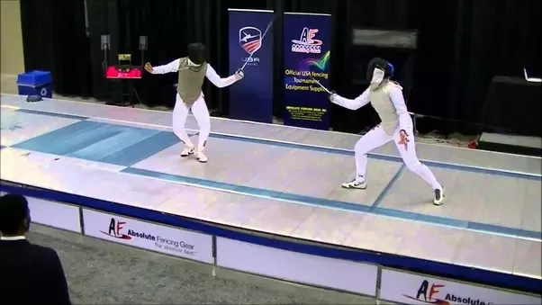
A fencer finds that they are being pushed back to one end of the piste and scored against twice. They put up a stronger defence at the start and successfully push their opponent back. Their opponent (uncomfortable with this situation) attacks from too far away and is punished by their opponent. By simply putting their opponent is an unfamiliar (uncomfortable) situation, a mistake was elicited.